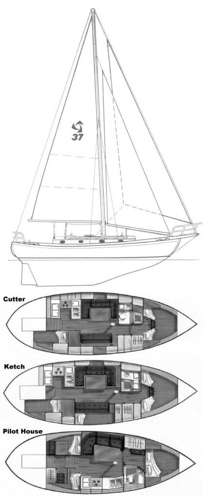
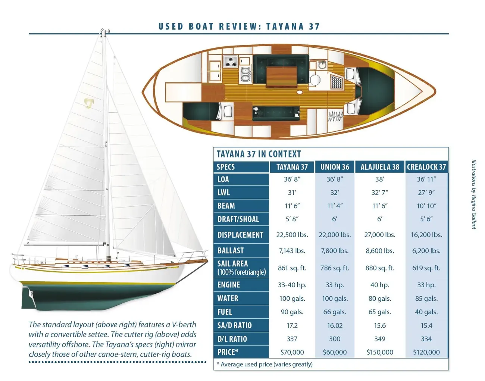

Bluewater cutter · Robert Perry
Tayana 37
A classic built for distance.
One of the most successful Taiwan-built offshore cruisers of its era: a heavy-displacement, long-keel cutter with a canoe stern, proven passagemaking reputation, and a refined traditional aesthetic.
Designed by Robert H. Perry and first built in 1976 by Ta Yang Yacht Building in Taiwan, the Tayana 37 was conceived as a serious alternative to the Westsail 32—retaining traditional double-ended aesthetics while delivering noticeably better performance and livability.
Originally introduced as the CT 37 (and briefly known as Ta Chiao / Ta Yang 37), the design quickly became the Tayana 37 and went on to become one of the most numerous and widely traveled semi-custom bluewater boats of its generation. Nearly 600 hulls were produced. Many remain in active long-distance service.
The boat is most often seen as a cutter, though a limited number of ketch-rigged examples and optional pilothouse versions exist. Its combination of solid hand-laid fiberglass construction, substantial iron ballast, and a versatile sail plan has earned it a durable reputation among offshore sailors.
- Designer: Robert H. Perry
- Builder: Ta Yang Yacht Building Co., Taiwan
- Years: primarily 1976 through the 1990s (spot builds later)
- Hull: solid hand-laid fiberglass, modified long keel, cutaway forefoot
- Stern: traditional canoe (Baltic-inspired) transom
- Primary rig: cutter (ketch optional)
- Role: coastal and bluewater cruiser / passagemaker
| Length overall (LOA) | 36.67 ft / 11.18 m |
|---|---|
| Length on waterline (LWL) | 31.00 ft / 9.45 m |
| Beam | 11.50–11.60 ft / ≈ 3.51 m |
| Draft (standard keel) | 5.67–5.75 ft / ≈ 1.73 m |
| Displacement | 22,500 lb / 10,206 kg (some sources list ≈ 24,000 lb loaded) |
| Ballast | ≈ 8,000 lb / 3,629 kg iron (figures vary slightly by source) |
| Sail area (cutter, reported) | ≈ 861 ft² / 80 m² |
| Fuel capacity | ≈ 90–100 gal / 340–380 L |
| Water capacity | ≈ 90–100 gal / 340–380 L |
| Auxiliary engine (original) | Yanmar diesel, typically 33–40 hp |
| Hull speed (theoretical) | ≈ 7.46 kn |
Perry deliberately modernized the traditional double-ender form. The forefoot of the long keel is cut away, the rudder is a more efficient Constellation-type profile rather than a barn-door shape, and the hull-to-keel transition is distinct rather than a classic wineglass section.
These choices reduce wetted surface and improve maneuverability relative to pure Colin Archer–style predecessors while preserving directional stability and the forgiving motion that full-keel boats are known for. The canoe stern draws visual and structural inspiration from earlier Scandinavian and Baltic designs (notably influences associated with Aage Nielsen’s Holger Danske).
The standard cutter rig carries a tall, relatively high-aspect mainsail and twin headsails (staysail and jib/genoa). Properly set up—with sensible mast rake and modern sail inventory—the boat is reported to be surprisingly weatherly and capable of respectable daily runs for a vessel of its displacement. Average passage speeds in the mid-5-knot range are typical; motivated crews have recorded stronger days.
Below decks the layout is traditional and teak-rich: V-berth forward, head, saloon with settees, U-shaped or linear galley, navigation station, and quarter berth or aft cabin arrangements depending on the semi-custom choices of the original owner. Headroom and storage are generous for the overall length. Many boats were delivered with teak decks, which remain a common maintenance item.


The Tayana 37 remains actively traded on the used market. Condition, refit history, and systems upgrades drive value more than year alone. Common survey focus areas include deck core (especially where teak was overlaid), chainplates and bulkhead interfaces, tankage, standing and running rigging, and the condition of original or older auxiliary systems.
Because the design is so widely distributed, parts knowledge, owner networks, and published experience are comparatively strong. Many examples have completed ocean crossings and multi-year cruises; the model is frequently cited as one of the more numerous single designs found wandering the world’s cruising grounds.
For a prospective owner the boat rewards careful inspection and a realistic refit budget. In return it offers a proven platform with genuine bluewater credentials, a classic appearance, and the practical advantages of a full-keel, moderate-draft cruiser that can still sail respectably when the wind fills in.
- Strong reputation as both coastal and offshore cruiser
- Active secondary market with frequent listings
- Teak decks and original systems often require attention
- Cutter rig preferred by most long-distance owners
- Semi-custom interiors mean layouts vary boat-to-boat
- Good community knowledge and published reviews available